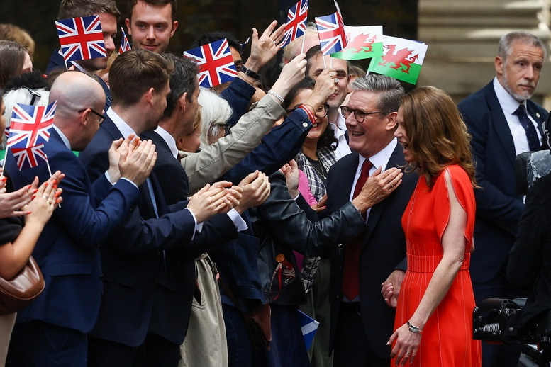

[Chính Trị] Tân Thủ tướng Anh Keir Starmer nhậm chức
Ông Keir Starmer cũng đã có bài phát biểu đầu tiên trước người dân
trên cương vị mới bên ngoài Dinh Thủ tướng ở số 10 phố Downing. tân Thủ
tướng Anh thừa nhận quy mô của những thách thức mà ông phải đối mặt sau
chiến thắng áp đảo của Công Đảng.
"Trên thực tế, cho dù các vị có
bỏ phiếu cho Công Đảng hay không, đặc biệt nếu các vị không bầu, tôi
cũng xin nói thẳng là chính phủ của tôi vẫn sẽ phụng sự các vị. Chính
trị có thể là động lực tốt. Chúng tôi sẽ chứng minh điều đó", ông Keir
Starmer nhấn mạnh.

Tân
Thủ tướng Anh cam kết sẽ làm mới trở lại đất nước, trong đó có cải
thiện cơ sở hạ tầng, giáo dục và nhà ở với giá cả phải chăng.
Trong
cuộc bầu cử trước đó, Công Đảng của ông Keir Starmer đã giành được hơn
390/650 ghế trong Hạ viện Anh, trong khi Đảng Bảo thủ của cựu Thủ tướng
Anh Rishi Sunak chỉ giành được 99 ghế. Kết quả này ấn định chiến thắng
áp đảo của Công Đảng và kết thúc 14 năm cầm quyền của Đảng Bảo thủ.
Ông
Keir Starmer, 61 tuổi, là một cựu luật sư nhân quyền và từng là công tố
viên trưởng của Anh và Xứ Wales. Ông được phong tước hiệp sĩ vì vai trò
lãnh đạo Cơ quan Công tố hoàng gia vào năm 2014.
Vợ ông là bà
Victoria, hiện đang làm việc trong lĩnh vực y tế lao động tại Dịch vụ Y
tế quốc gia Anh (NHS). Họ có hai người con đang ở tuổi vị thành niên.
Ông
tham gia chính trường khi được bầu vào quốc hội vào năm 2015. Năm 2020,
ông được bổ nhiệm vào vị trí lãnh đạo Công Đảng, đúng giai đoạn đầy
thách thức khi nước Anh trải qua đại dịch COVID-19, rời khỏi Liên minh
châu Âu (EU), hứng chịu cú sốc kinh tế từ xung đột Nga - Ukraine và
nhiệm kỳ thủ tướng 49 ngày của bà Liz Truss vào năm 2022.
Ông
Starmer là người phản đối mạnh mẽ quyết định rời khỏi EU, tuy nhiên ông
cho biết hiện tại Công Đảng sẽ không tìm cách đảo ngược quyết định ấy.
Thay vào đó, ông muốn đàm phán một thỏa thuận tốt hơn với EU trước những
hậu quả kinh tế mà Anh phải đối diện từ Brexit.